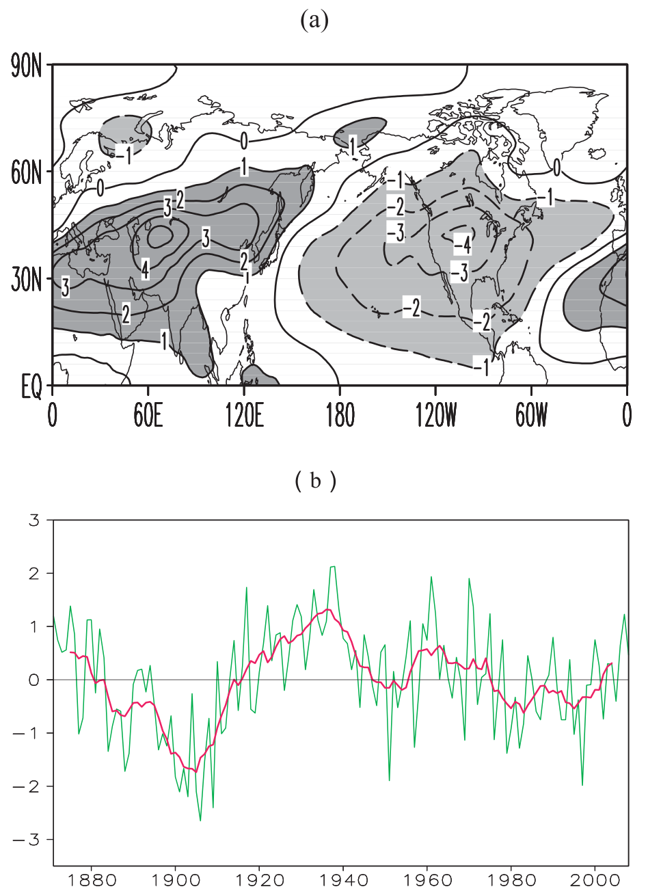
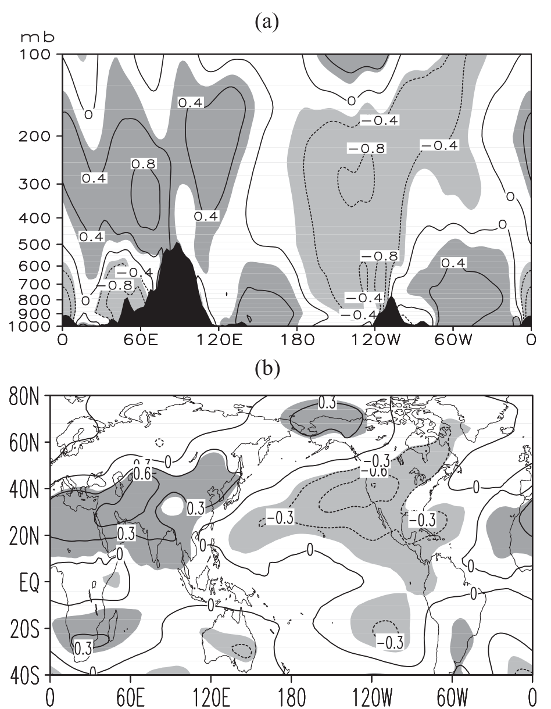
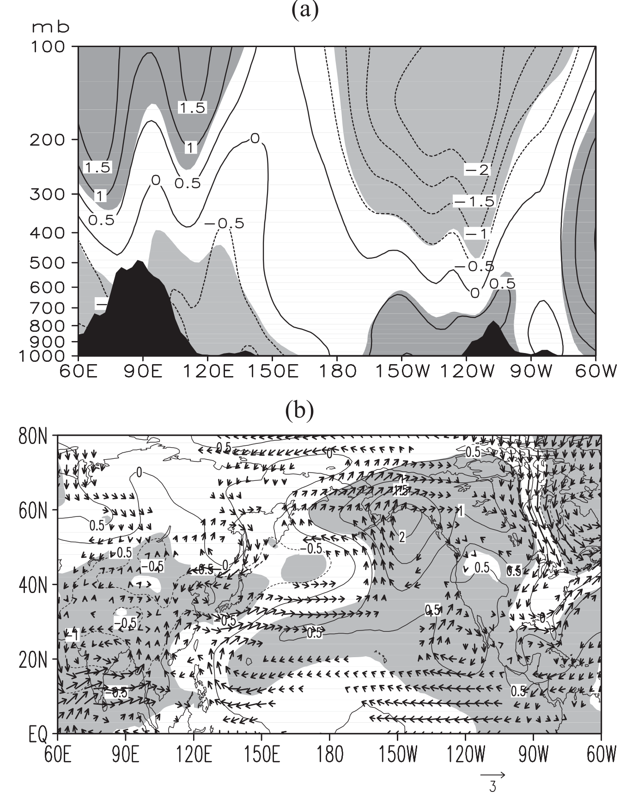
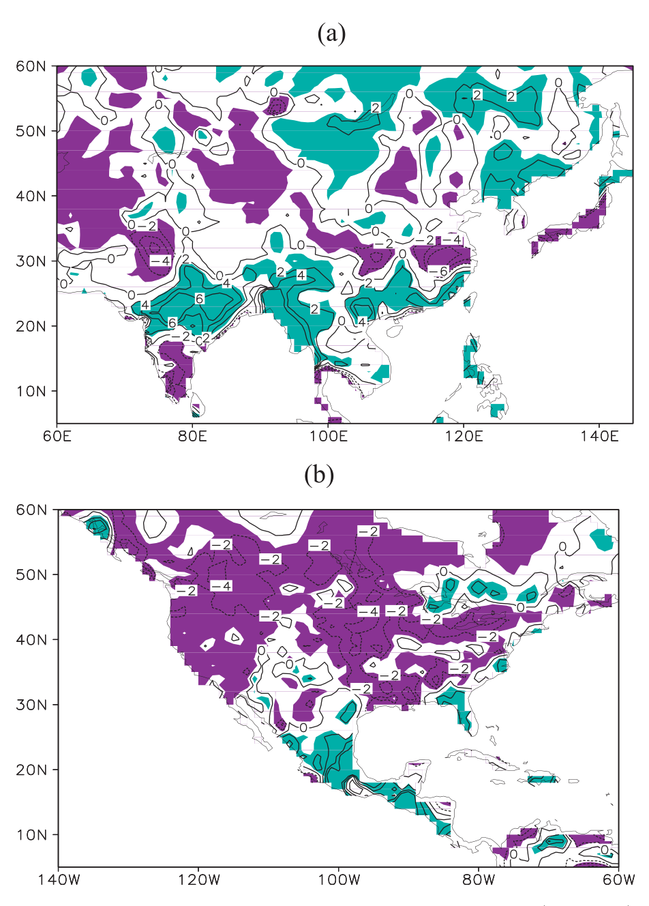
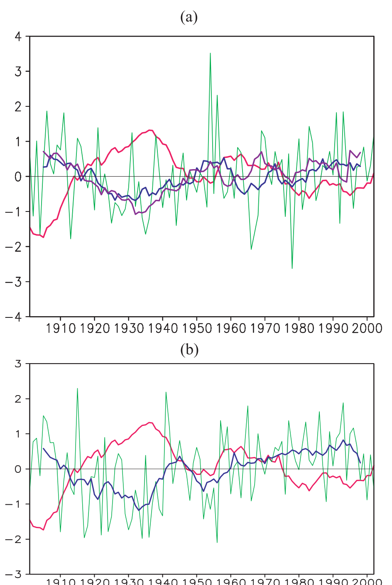

近 100 年亚洲—太平洋涛动与亚洲、北太平洋和北美夏季气候异常的年代际关系
Interdecadal Relationships between the Asian–Pacific Oscillation and Summer Climate Anomalies over Asia, North Pacific, and North America during a Recent 100 Years
赵平a、杨松b、王会军c、张强d
PING ZHAO,a SONG YANG,b HUIJUN WANG,c AND QIANG ZHANGd
a 中国气象局国家气象信息中心暨灾害天气国家重点实验室，北京，中国
a National Meteorological Information Centre, China Meteorological Administration, and State Key Laboratory of Severe Weather, Beijing, China
b 美国国家海洋和大气管理局/国家气象局/国家环境预报中心/气候预测中心，马里兰州坎普斯普林斯
b NOAA/NWS/NCEP/Climate Prediction Center, Camp Springs, Maryland
c 中国科学院大气物理研究所，北京，中国
c Institute of Atmospheric Physics, Chinese Academy of Sciences, Beijing, China
d 中国气象局国家气象信息中心，北京，中国
d National Meteorological Information Centre, China Meteorological Administration, Beijing, China
（稿件于 2011 年 1 月 25 日收到，2011 年 3 月 28 日定稿）
(Manuscript received 25 January 2011, in final form 28 March 2011)
通讯作者地址：S. Yang, NOAA/Climate Prediction Center, 5200 Auth Road, Room 605, Camp Springs, MD 20746。电子邮箱：song.yang@noaa.gov
Corresponding author address: S. Yang, NOAA/Climate Prediction Center, 5200 Auth Road, Room 605, Camp Springs, MD 20746. E-mail: song.yang@noaa.gov
DOI: 10.1175/JCLI-D-11-00054.1
DOI: 10.1175/JCLI-D-11-00054.1
© 2011 美国气象学会
© 2011 American Meteorological Society
摘要Abstract
在年代际时间尺度上检验夏季亚洲—太平洋涛动（APO）与亚洲、北太平洋和北美气候异常之间的关系。
Summertime relationships between the Asian–Pacific Oscillation (APO) and climate anomalies over Asia, the North Pacific, and North America are examined on an interdecadal time scale.
APO 值在 19 世纪 80 年代至 1910 年代中期较低，在 20 世纪 20 年代至 40 年代较高。
The values of APO were low from the 1880s to the mid-1910s and high from the 1920s to the 1940s.
当 APO 较高时，亚洲上空的对流层温度较高，太平洋和北美上空的对流层温度较低。
When the APO was higher, tropospheric temperatures were higher over Asia and lower over the Pacific and North America.
从低 APO 年代到高 APO 年代，南亚上空的对流层上层高压和对流层下层低压系统均加强，而北美上空的这些系统减弱。
From the low-APO decades to the high-APO decades, both upper-tropospheric highs and lower-tropospheric low pressure systems strengthened over South Asia and weakened over North America.
其结果是，亚洲季风区盛行异常的偏南—西南气流，意味着亚洲上空的水汽输送更强。
As a result, anomalous southerly–southwesterly flow prevailed over the Asian monsoon region, meaning stronger moisture transport over Asia.
相反，北美上空对流层上层高压和对流层下层低压的减弱导致该地区上空出现异常的下沉运动。
On the contrary, the weakened upper-tropospheric high and lower-tropospheric low over North America caused anomalous sinking motion over the region.
其结果是，亚洲季风区的降水普遍增多，北美的降水减少。
As a result, rainfall generally enhanced over the Asian monsoon regions and decreased over North America.
1. 引言1. Introduction
许多研究已经探讨了亚洲与北美之间夏季大气环流的关系，但主要集中在季节内到年际时间尺度上（例如，Barnston and Livezey 1987; Nitta 1987; Lau 1992; Rodwell and Hoskins 2001; Wang et al. 2001; Lau and Weng 2002; Ding and Wang 2005; Zhang et al. 2005）。
A number of studies have addressed the relationships in summertime atmospheric circulation between Asia and North America, mostly on intraseasonal-to-interannual time scales (e.g., Barnston and Livezey 1987; Nitta 1987; Lau 1992; Rodwell and Hoskins 2001; Wang et al. 2001; Lau and Weng 2002; Ding and Wang 2005; Zhang et al. 2005).
厄尔尼诺—南方涛动、北极涛动、太平洋年代际涛动以及亚洲—太平洋—美洲遥相关等，都被用来解释北半球不同地区之间夏季降水的联系（Lau 1992; Ding and Wang 2005; Li et al. 2005; Zhang et al. 2005）。
El Niño–Southern Oscillation, the Arctic Oscillation, the Pacific decadal oscillation, and the Asia–Pacific–America teleconnection, among others, have been applied to explain the links of summertime rainfall between different regions in the Northern Hemisphere (Lau 1992; Ding and Wang 2005; Li et al. 2005; Zhang et al. 2005).
最近，Zhao 等（2007）探讨了亚洲与北太平洋之间对流层温度的夏季纬向遥相关型，并将其称为亚洲—太平洋涛动（APO）。
Recently, Zhao et al. (2007) addressed a summertime zonal teleconnection pattern of the tropospheric temperatures between Asia and the North Pacific and referred to it as the Asian–Pacific Oscillation (APO).
APO 还衡量东、西半球之间温度跷跷板型的变化（Zhao et al. 2010）。
The APO also measures the variability of a seesaw pattern of temperatures between the eastern and western hemispheres (Zhao et al. 2010).
在年际时间尺度上，它与亚洲季风降水、南亚高压、东亚热带外西风急流、南亚的热带东风急流、北太平洋副热带高压以及北美上对流层高压脊的变化密切相关。
On an interannual time scale, it is closely linked to the variations of Asian monsoon rainfall, the South Asian high, the extratropical westerly jet stream over East Asia, the tropical easterly jet stream over southern Asia, the North Pacific subtropical high, and the upper-tropospheric ridge over North America.
它还与热带外和热带太平洋的海表温度（SST）异常密切相关。
It is also closely linked to extratropical and tropical Pacific sea surface temperature (SST) anomalies.
最近，Liu 等（2011）揭示了 APO 与东亚降水在年代际时间尺度上的密切关系，为认识东亚夏季风系统的长期变率提供了进一步的见解。
More recently, Liu et al. (2011) revealed a close relationship between APO and East Asian rainfall on an interdecadal time scale, providing a further insight on the long-term variability of the East Asian summer monsoon system.
尽管已有这些研究，仍有几个问题尚未得到很好的解决。
In spite of the previous effort, several issues have not been well addressed.
例如，横跨亚洲—太平洋—美洲区域的遥相关型的年代际变化及其与温度和降水异常的关联，尚未被充分理解。
For example, the interdecadal variations of teleconnection patterns across the Asia–Pacific–America sector and their associations with temperature and precipitation anomalies have not been fully understood.
众所周知，太平洋年代际涛动与北美降水的年代际变率之间存在密切关系（McCabe et al. 2004）。
It is known that a close relationship exists between the Pacific decadal oscillation and the interdecadal variability of North American rainfall (McCabe et al. 2004).
也已知热带外北太平洋的 SST 异常与 APO 存在联系（Zhao et al. 2010, 2011）。
It is also known that the extratropical North Pacific SST anomalies are linked to the APO (Zhao et al. 2010, 2011).
那么，在年代际时间尺度上，北美的气候异常与 APO 有何关系？
Then, how are the climate anomalies over North America related to APO on an interdecadal time scale?
在本研究中，我们使用过去 100 年的资料，在年代际时间尺度上检验亚洲、北太平洋和北美上空与 APO 相关的大气环流和降水异常的特征。
In this study, we use data for the past 100 years to examine the features of APO-related atmospheric circulation and rainfall anomalies over Asia, the North Pacific, and North America on an interdecadal time scale.
我们首先在第 2 节描述数据集的特征，然后在第 3 节讨论 APO 的年代际变率，在第 4 节讨论其与气候异常的关系。
We first describe the features of datasets in section 2, and then discuss the interdecadal variability of APO in section 3 and its relationship with climate anomalies in section 4.
第 5 节给出所得结果的总结。
A summary of the results obtained is presented in section 5.
2. 数据2. Data
我们使用 20 世纪再分析 V2 产品的月平均资料，水平分辨率为 2°×2° 经纬度，时段为 1871–2008 年（Compo et al. 2011）。
We apply the monthly mean data of the twentieth-century reanalysis V2 products, in a horizontal resolution of 2° × 2° latitude and longitude, for 1871–2008 (Compo et al. 2011).
全球月平均 SST 来自哈德利中心海冰与海表温度资料，分辨率为 1°×1°，时段为 1871–2002 年（Rayner et al. 2003）。
The global monthly SST from the Hadley Centre Sea Ice and Sea Surface Temperature, in a resolution of 1° × 1°, for 1871–2002 (Rayner et al. 2003).
全球陆地月降水来自气候研究单位（CRU）的分析资料，分辨率为 0.5°×0.5°，时段为 1901–2002 年（New et al. 2000）。
And the global land monthly precipitation from the Climatic Research Unit (CRU) analysis, in a resolution of 0.5° × 0.5°, for 1901–2002 (New et al. 2000).
我们还使用中国南京站（世界气象组织（WMO）编号 58238，位于 32°03′N、118°47′E，海拔 679 m）1905–2002 年的月总降水量，以评估由 CRU 资料所得结果的稳健性。
The monthly total rainfall at the Nanjing station of China [World Meteorological Organization (WMO) identification number 58238), which is at 32°03′N, 118°47′E and is 679 m above sea level, for 1905–2002, is also used to assess the robustness of results obtained from the CRU data.
该月站点资料存档于中国气象局国家气象信息中心，1938、1939 和 1945 年有三条缺失记录，在分析中对其进行了线性插值。
The monthly station data, archived at the National Meteorological Information Centre of China, have three missing records for 1938, 1939, and 1945, which are linearly interpolated in the analysis.
线性相关和合成差值的统计显著性用 Student's t 检验评估。
The statistical significance of linear correlation and composite differences is assessed by the Student's t test.
3. APO 的年代际变率3. Interdecadal variability of APO
我们首先对 1871–2008 年北半球夏季（5–9 月，MJJAS）上对流层（300–200 hPa）温度偏差 T′的异常进行面积加权经验正交函数（EOF）分析。
We first perform an area-weighting empirical orthogonal function (EOF) analysis of the anomalies of summer [May–September (MJJAS)] upper-tropospheric (300–200 hPa) temperature deviation T′ for the Northern Hemisphere in 1871–2008.
这里，T′ 定义为 T′ = T − T̄，其中 T 为气温，T̄ 为 T 的纬向平均。
Here, T′ is defined as T′ = T − T̄, where T is air temperature, and T̄ is the zonal mean of T.
最主导的模态（EOF1）解释了总方差的 25%。
The most dominant mode (EOF1) accounts for 25% of the total variance.
从图 1a 可见，EOF1 在亚洲与热带外北太平洋之间呈现反位相变化。
As seen from Fig. 1a, EOF1 exhibits an out-of-phase variation between Asia and the extratropical North Pacific.
正值主要出现在欧亚大陆和北非，负值主要出现在北太平洋、北美和北大西洋的热带外地区。
Positive values appear mainly over Eurasia and North Africa, and negative values occur mainly over the extratropics of the North Pacific, North America, and the North Atlantic.
将图 1a 中的型与 Zhao 等（2007）给出的 APO 相关特征进行比较表明，这种北半球热带外遥相关的结构与 APO 相关联的结构相似。
Comparing the pattern in Fig. 1a with the APO-related features shown by Zhao et al. (2007) indicates that the structure of this Northern Hemispheric extratropical teleconnection is similar to the structure associated with APO.
图 1b 中 EOF1 的时间序列与 Zhao 等（2007）定义的 APO 指数高度相关（1871–2008 年 R = 0.88）。
The time series of EOF1 in Fig. 1b is highly correlated with the APO index defined by Zhao et al. (2007) (R = 0.88 for 1871–2008).
遵循 Zhao 等（2010），我们用图 1b 中 EOF1 的标准化时间序列来衡量 APO。
Following Zhao et al. (2010), we use standardized time series of EOF1 in Fig. 1b to measure APO.

图 1.（a）MJJAS 上对流层（300–200 mb）平均 T′异常的 EOF1（×0.1）；（b）APO 指数（绿色），定义为 EOF1 的时间序列及其 9 年滑动平均（红色）。
FIG. 1. (a) EOF1 (×0.1) of the anomaly of MJJAS upper-tropospheric (300–200-mb) mean T′, and (b) the APO index (green) defined as the time series of EOF1 and its 9-yr running mean (red).
图 1b 显示出明显的年代际变化，但没有线性趋势，这与欧亚大陆、太平洋和北美热带外地区上对流层温度的不显著趋势一致（图未给出）。
Figure 1b shows an apparent interdecadal variation, but no linear trend, consistent with the insignificant trends of upper-tropospheric temperature over the extratropics of Eurasia, the Pacific, and North America (figures not shown).
低 APO 值出现在 19 世纪 80 年代至 1910 年代中期以及 20 世纪 70 年代末至 90 年代，其中 1901–1910 年的值最低（图 1b）。
Low-APO values were observed from the 1880s to the mid-1910s and from the late 1970s to the 1990s, with the lowest values in 1901–1910 (Fig. 1b).
相反，高 APO 值出现在 20 世纪 20 年代至 40 年代以及 50 年代末至 70 年代初，其中 30 年代的值最高。
On the contrary, high-APO values were found from the 1920s to the 1940s and from the late 1950s to the early 1970s, with the highest values in the 1930s.
APO 与太平洋 SST 高度相关（Zhao et al. 2010），这种强的 APO–SST 关系可能解释早期 APO 变率的可靠性（另见 Liu et al. 2011）。
The APO is highly correlated to the Pacific SST (Zhao et al. 2010), and the strong APO–SST relationship may explain the reliability of APO variability in the early period (also see Liu et al. 2011).
1871–1950 年，热带外北太平洋（热带东太平洋）上 APO 与 SST 的相关显著为正（为负）。
The correlations between APO and SST are significantly positive (negative) over the extratropical North Pacific (tropical eastern Pacific) in 1871–1950.
该结果与 1958–2001 年的特征一致（Zhao et al. 2010），稳定的 APO–SST 关系意味着早期 APO 变率是可靠的。
The result is consistent with the feature for 1958–2001 (Zhao et al. 2010), and the stable APO–SST relationship implies reliable APO variability in the early period.
显然，APO 指数在 1950 年之前表现出很大的变率。
Clearly, the APO index exhibited a large variation prior to 1950.
事实上，亚洲和北美的夏季降水也出现了很大的变率（见第 4 节）。
Indeed, large variability also occurred in the summer rainfall over Asia and North America (see section 4).
为检验与 APO 年代际变率相关的大气环流和降水异常，我们选取 1884–1913 年作为低 APO 时期、1921–1950 年作为高 APO 时期进行对比分析。
To examine the anomalies of atmospheric circulation and rainfall associated with the interdecadal variability of APO, we select 1884–1913 as a low-APO period and 1921–1950 as a high-APO period for a comparative analysis.
4. 与 APO 变率相关的大气环流和降水异常4. Atmospheric circulation and rainfall anomalies associated with APO variability
图 2a 显示，对应于高 APO 值，亚洲上空出现显著的对流层 T′正异常，太平洋和北美上空出现显著的负异常。
Figure 2a shows that, corresponding to the high values of APO, significant positive anomalies of tropospheric T′ occur over Asia, and significant negative anomalies appear over the Pacific and North America.
在图 2b 中，显著的正异常覆盖亚洲中纬度地区，显著的负异常从热带外北太平洋一直延伸到北美。
In Fig. 2b, significant positive anomalies cover the midlatitudes of Asia and significant negative anomalies extend from the extratropical North Pacific to North America.
同时，热带印度洋上空的异常较弱。
Meanwhile, weak anomalies are found over the tropical Indian Ocean.
这些特征与近几十年在年际时间尺度上发现的特征相似（见 Zhao et al. 2010）。
These features are similar to the features found on interannual time scale for the recent decades (see Zhao et al. 2010).
上述结果表明，在高 APO 年代，亚洲上空的对流层较暖，热带外北太平洋和北美上空的对流层较冷，因此亚洲与其邻近海洋之间的对流层温度梯度更大。
The above result suggests a warmer troposphere over Asia and a cooler troposphere over the extratropical North Pacific and North America, and thus a larger tropospheric temperature gradient between Asia and its adjacent oceans, in the high-APO decades.

图 2.（a）高、低 APO 指数年代之间 MJJAS T′（°C）合成差值沿 35°N 的经度—高度剖面。
FIG. 2. (a) Longitude–height cross section of composite difference in MJJAS T′ (°C) between high and low-APO index decades along 35°N.
（b）高、低 APO 指数年代之间 MJJAS 500–200-hPa 平均 T′合成差值的经度—纬度分布。
(b) Longitude–latitude pattern of composite difference in MJJAS 500–200-hPa mean T′ between high and low-APO index decades.
阴影区表示在 95% 置信水平上显著的值。
Shaded areas represent the significant values at the 95% confidence level.
与对流层温度异常相伴随，对流层位势高度偏差（H′）也发生了显著变化。
Associated with the anomalies of tropospheric temperature are significant changes in the deviation of tropospheric geopotential height (H′).
从沿 35°N 的 H′合成差值图（图 3a）可见，亚洲上空在对流层上层和下层分别出现显著的正异常和负异常。
As seen from the difference in composite H′ pattern along 35°N (Fig. 3a), significant positive and negative anomalies appear over Asia at the upper troposphere and the lower troposphere, respectively.
太平洋和北美上空则观测到符号相反的特征，即上层和下层分别出现显著的负值和正值。
A feature of opposite signs is observed over both the Pacific and North America, where significant negative and positive values are found at the upper layers and the lower layers, respectively.
在 150 hPa 上，大尺度的正（负）异常覆盖 20°–50°N 之间的亚洲（北太平洋和北美）（图未给出）。
At 150 hPa, large-scale positive (negative) anomalies cover Asia (the North Pacific and North America) between 20° and 50°N (figures not shown).
在 850 hPa 上（图 3b），50°N 以南的亚洲上空存在大范围显著的 H′负异常，中心值 −10 m 位于南亚季风区。
At 850 hPa (Fig. 3b), there are large-scale significant negative anomalies of H′ over Asia south of 50°N, with a central value of −10 m in the South Asian monsoon region.
另一方面，北太平洋中东部和北美上空观测到大范围的显著正异常，最大值为 20 m。
On the other hand, large-scale significant positive anomalies are observed over the central-eastern North Pacific and North America, with a maximum value of 20 m.
夏季，热带—副热带亚洲的对流层上层盛行大尺度高压系统（即南亚高压），对流层下层则出现大尺度低压系统，中心位于印度北部（图未给出）。
In summer, a large-scale high pressure system (i.e., the South Asian high) prevails at the upper troposphere over tropical–subtropical Asia and a large-scale low pressure system appears at the lower troposphere with a center over northern India (figures not shown).
同时，北美上空在对流层上层也存在一个相对较弱的高压系统（墨西哥高压），在对流层下层存在一个低压系统。
Meanwhile, there are also a relatively weaker high pressure system (the Mexican high) at the upper troposphere and a low pressure system at the lower troposphere over North America.

图 3.（a）同图 2a，但为 MJJAS H′（×10 m）。
FIG. 3. (a) As in Fig. 2a, but for MJJAS H′ (×10 m).
（b）同图 2b，但为 850-hPa H′（×10 m；等值线）和风（m s⁻¹；矢量）。
(b) As in Fig. 2b, but for 850-hPa H′ (×10 m; contours) and winds (m s⁻¹; vectors).
（b）中仅绘出在 95% 置信水平上显著的矢量。
Only significant vectors at the 95% confidence level are plotted in (b).
在高 APO 指数年代，对流层上层亚洲上空的 H′正异常和北美上空的负异常，显然表明南亚高压加强、墨西哥高压减弱。
During the high-APO index decades, at the upper troposphere, the positive anomalies of H′ over Asia and the negative anomalies over North America apparently indicate a strengthened South Asian high and a weakened Mexican high.
类似地，对流层下层亚洲上空的 H′负异常和北美上空的正异常，表明亚洲的低压系统加强、北美的低压系统减弱。
Similarly, at the lower troposphere, the negative anomalies of H′ over Asia and the positive anomalies over North America indicate a strengthened low system over Asia and a weakened low system over North America.
也就是说，高 APO 指数年代南亚的季风槽更强。
That is, the monsoon trough over South Asia is stronger in the high-APO index decades.
从图 3b 可见，对应于亚洲上空的异常低压，南亚盛行异常西风，中国南方盛行异常偏南风或西南风。
It is seen from Fig. 3b that anomalous westerly winds prevail over South Asia and anomalous southerly or southwesterly winds prevail over southern China corresponding to the anomalous low over Asia.
这些异常的西南风或偏南风表明，高 APO 指数年代亚洲季风环流更强。
These anomalous southwesterly or southerly winds indicate stronger Asian monsoon circulation in the high-APO index decades.
另一方面，20 世纪 60 年代至 90 年代东亚夏季风环流显著减弱（Wang 2001; Jiang and Wang 2005），对应于 APO 指数的年代际下降（见图 1b）。
On the other hand, the East Asian summer monsoon circulation weakened pronouncedly from the 1960s to the 1990s (Wang 2001; Jiang and Wang 2005), corresponding to the decadal decrease of APO index (see Fig. 1b).
1901–2002 年 MJJAS 降水对 APO 的回归显示，华北和长江流域的降水分别出现显著的正异常和负异常（图未给出），与 1958–2001 年的结果一致（Zhao et al. 2007）。
The regressed MJJAS rainfall against APO during 1901–2002 shows significant positive and negative anomalies of rainfall over North China and the Yangtze River Valley, respectively (figure not shown), consistent with the result for 1958–2001 (Zhao et al. 2007).
这种一致性意味着 1901–2002 年期间 APO 与中国东部降水之间存在稳定的关系。
This consistency implies a stable relationship between APO and the rainfall over eastern China during 1901–2002.
在年代际时间尺度上，降水对 APO 9 年滑动平均的回归型在印度、中南半岛和 15°–30°N 之间的中国南方呈现显著的正异常（图 4a）。
On an interdecadal time scale, the pattern of regressed rainfall against the 9-yr running mean of APO exhibits significant positive anomalies over India, the Indo-China Peninsula, and southern China between 15° and 30°N (Fig. 4a).
特别地，APO 与南亚（75°–100°E，20°–30°N）降水之间获得了 0.64 的高度显著相关，表明高 APO 指数年代南亚的季风降水更多。
Particularly, a highly significant correlation of 0.64 is obtained between APO and the rainfall over South Asia (75°–100°E, 20°–30°N), indicating more monsoon rainfall over South Asia in the high-APO index decades.
由于南亚夏季风环流加强往往伴随着中国长江流域夏季降水减少（如 Wang 2001; Zhao et al. 2007），APO 与长江流域降水之间呈现显著的负相关（图 4a）。
As strengthened summer monsoon circulation over South Asia is often accompanied by less summer rainfall over the Yangtze River basin of China (e.g., Wang 2001; Zhao et al. 2007), a significant negative correlation appears between APO and the Yangtze River basin rainfall (Fig. 4a).
例如，APO 与 115°–120°E、29°–33°N 区域平均降水之间存在 −0.71 的强相关。
For example, a strong correlation of −0.71 is found between APO and the area-average rainfall over 115°–120°E, 29°–33°N.
此外，1905–2002 年 APO 与中国东部南京站降水之间的相关系数高达 −0.65（图 5a），进一步支持了 CRU 资料分析的结果。
In addition, a large correlation coefficient of −0.65 is obtained between APO and the rainfall over Nanjing station in eastern China for 1905–2002 (Fig. 5a), further supporting the result from the analysis of the CRU data.
APO 与亚洲季风降水之间的这些年代际尺度关系，与年际时间尺度上发现的关系相似（Zhao et al. 2007）。
These relationships between APO and Asian monsoon rainfall on an interdecadal time scale are similar to those found on interannual time scale (Zhao et al. 2007).

图 4. 1901–2002 年 MJJAS 降水的 9 年滑动平均对 APO 指数 9 年滑动平均的回归（×10 mm）：（a）亚洲；（b）北美。
FIG. 4. Regressed 9-yr running mean of MJJAS rainfall (×10 mm) against the 9-yr running mean of APO index during 1901–2002 for (a) Asia and (b) North America.
蓝色（紫色）阴影区表示在 95% 置信水平上显著的正（负）值。
Blue (purple) shaded areas represent the positive (negative) values that are significant at the 95% confidence level.

图 5.（a）长江流域 MJJAS 降水指数（绿色）及其 9 年滑动平均（蓝色），以及南京 MJJAS 降水的 9 年滑动平均（紫色）和 MJJAS APO 指数的 9 年滑动平均（红色）。
FIG. 5. (a) MJJAS rainfall index over the Yangtze River basin (green) and its 9-yr running mean (blue), with the 9-yr running means of Nanjing MJJAS rainfall (purple) and MJJAS APO index (red).
（b）同（a），但为北美（无紫色线）。
(b) As in (a), but for North America (without purple line).
在高 APO 指数年代，亚洲高纬度地区出现异常反气旋环流（图 3b）。
During the high-APO index decades, anomalous anticyclonic circulation appears over the high latitudes of Asia (Fig. 3b).
相应地，东亚中高纬度地区出现异常东南风或西南风，加强了当地的水汽输送。
Correspondingly, anomalous southeasterly or southwesterly winds are observed over the mid-high latitudes of East Asia, strengthening local moisture transport.
然而，西亚上空出现异常西北风或东北风，减弱了水汽输送。
Over West Asia, however, anomalous northwesterly or northeasterly winds occur, weakening moisture transport.
因此，东亚中高纬度地区降水普遍增多（零星地区除外），西亚降水减少（图 4a）。
Accordingly, there is generally more rainfall over the midhigh latitudes of East Asia (with exceptions in scattered areas) and less rainfall over West Asia (Fig. 4a).
APO 与东亚中高纬度（95°–140°E，40°–60°N）降水之间的相关系数为 0.30（99% 置信水平显著），APO 与西亚（60°–75°E，30°–60°N）降水之间的相关系数为 −0.54（99.9% 置信水平显著）。
The correlation coefficient is 0.30 (significant at the 99% confidence level) between APO and the rainfall over the mid- to high latitudes of East Asia (95°–140°E, 40°–60°N) and −0.54 (significant at the 99.9% confidence level) between APO and the rainfall over West Asia (60°–75°E, 30°–60°N).
在北美上空，对流层中出现异常下沉运动（图未给出），这与减弱的上对流层墨西哥高压及其下方的异常反气旋环流型有关（图 3）。
Over North America, anomalous sinking motion appears in the troposphere (figures not shown), associated with a weakened upper-tropospheric Mexican high and an anomalous anticyclonic circulation pattern underneath (Fig. 3).
这种垂直运动的变化导致当地降水减少，1901–2002 年 APO 与 130°–80°W、30°–55°N 区域降水之间存在显著的负相关 0.40（99.9% 置信水平显著）。
This change in vertical motion leads to a decrease in local rainfall, with a significant negative correlation of 0.40 (significant at the 99.9% confidence level) between APO and the rainfall over 130°–80°W, 30°–55°N for 1901–2002.
图 4b 显示，高 APO 指数年代 30°–60°N 之间的北美大部分地区出现大范围的降水负异常；图 5b 则表明，在年代际时间尺度上 APO 与北美降水之间存在反位相关系。
Figure 4b reveals large-scale negative anomalies of rainfall over most of North America between 30° and 60°N in the high-APO index decades, and Fig. 5b exhibits an out-of-phase relationship between APO and the rainfall over North America on an interdecadal time scale.
1900 年代和 1980–1990 年代的低 APO 值伴随较多的降水，1920–1930 年代的高 APO 值伴随较少的降水，1901–2002 年 APO—降水相关系数为 −0.67。
The low-APO values in the 1900s and the 1980s–1990s are accompanied by more rainfall, and the high-APO values in the 1920s–1930s are accompanied by less rainfall, with an APO–rainfall correlation coefficient of −0.67 for 1901–2002.
由原始 APO 指数减去其 9 年滑动平均所衡量的 APO 年际变率，也与北美降水的年际变率显著相关（1901–2002 年 R = −0.29，99% 置信水平显著）。
The interannual variability of APO measured by the raw APO index minus its 9-yr running mean also has a significant correlation with the interannual variability of rainfall over North America (R = −0.29 for 1901–2002, significant at the 99% confidence level).
5. 总结5. Summary
夏季亚洲—太平洋涛动（APO）指数表现出年代际变化。
The summertime Asian–Pacific Oscillation (APO) index exhibits an interdecadal variation.
低 APO 值出现在 19 世纪 80 年代至 1910 年代中期，高 APO 值出现在 20 世纪 20 年代至 40 年代。
Low-APO values occurred from the 1880s to the mid-1910s, and high-APO values appeared from the 1920s to the 1940s.
与低指数年代相比，高指数年代亚洲上空的对流层更暖，北太平洋和北美上空的对流层更冷。
The troposphere was warmer over Asia and cooler over the North Pacific and North America in the high-index decades than in the low-index decades.
与 APO 的这种变化相伴随，在亚洲—太平洋—美洲区域的夏季对流层大气环流中观测到显著的信号。
Associated with this variation of APO, significant signals were observed in the summertime tropospheric atmospheric circulation over the Asia–Pacific–America sector.
从低指数年代到高指数年代，上对流层南亚高压加强，同时亚洲下对流层低压系统增强。
From the low-index decades to the high-index decades, the upper-tropospheric South Asian high strengthened, with an intensified lower-tropospheric low pressure system over Asia.
亚洲季风区盛行异常的偏南—西南风，导致水汽向北输送增强，亚洲季风区降水增多。
Anomalous southerly–southwesterly winds prevailed over the Asian monsoon region, leading to strong northward transport of moisture and enhanced rainfall over the Asian monsoon region.
另一方面，上对流层墨西哥高压减弱，同时北美下对流层低压系统减弱。
On the other hand, the upper-tropospheric Mexican high weakened, with a diminished lower-tropospheric low pressure system over North America.
因此，观测到异常的下沉运动和减少的降水。
As a result, anomalous sinking motion and reduced rainfall were observed.
此外，过去 100 年中 APO 的最大变率出现在 1950 年之前，并伴随着亚洲和北美降水的最大波动。
Moreover, the largest variability of APO over the past 100 years occurred prior to 1950, accompanied by the largest fluctuations in rainfall over Asia and North America.
APO 与降水之间的这种关系或许可以从物理上加以解释，它也可能支持 20 世纪再分析资料在 1950 年之前早期时段 APO 变率的可靠性。
This relationship between APO and rainfall, which may be physically explained, may also support the reliability of the APO variability in the twentieth-century reanalysis for the early period prior to 1950.
已有研究表明，北美夏季降水和干旱的年代际变率与年大西洋多年代际振荡和太平洋年代际涛动密切相关（McCabe et al. 2004; Sutton and Hodson 2005）。
Previous studies have shown that the interdecadal variability of summer rainfall and drought over North America is closely associated with the annual Atlantic multidecadal oscillation and the Pacific decadal oscillation (McCabe et al. 2004; Sutton and Hodson 2005).
本研究进一步揭示了 APO 与北美降水之间在年代际时间尺度上的显著关系，特别是 APO 对降水变化的可能贡献。
The current study further reveals a significant relationship between APO and the rainfall over North America, especially the possible contribution of APO to rainfall variation, on an interdecadal time scale.
该分析还表明，进一步研究亚洲、北太平洋和北美上空大气环流的遥相关型，对于增进理解亚洲与北美气候异常之间的关系十分重要。
This analysis also suggests the importance of further investigations into the teleconnection patterns of atmospheric circulation over Asia, the North Pacific, and North America for improved understanding of the relationships between Asian and North American climate anomalies.
在年际时间尺度上，非夏季的各个季节也存在 APO 及其与气候异常的联系（Nan et al. 2009; Zhou and Zhao 2010; Zou and Zhao 2011）。
On an interannual time scale, APO and its links to climate anomalies have also been found in the nonsummer seasons (Nan et al. 2009; Zhou and Zhao 2010; Zou and Zhao 2011).
研究这些季节 APO 的年代际特征及其气候联系，也很有意义。
It is also interesting to investigate the interdecadal features of APO and its climate links for these seasons.
致谢Acknowledgments
我们感谢 NOAA/地球系统研究实验室提供 20 世纪再分析 V2 数据产品（在线获取：http://www.esrl.noaa.gov/psd/data/20thC_Rean）。
We thank the NOAA/Earth System Research Laboratory for providing the 20th Century Reanalysis V2 data products (online at http://www.esrl.noaa.gov/psd/data/20thC_Rean).
20 世纪再分析项目数据集的支持由下列机构提供：美国能源部科学办公室“对理论与实验的创新和新颖计算影响”（DOE INCITE）计划与生物和环境研究办公室（BER），以及美国国家海洋和大气管理局/气候计划办公室。
Support for the Twentieth Century Reanalysis Project dataset is provided by the U.S. Department of Energy, Office of Science Innovative and Novel Computational Impact on Theory and Experiment (DOE INCITE) program, and Office of Biological and Environmental Research (BER), and by the National Oceanic and Atmospheric Administration/Climate Program Office.
我们还感谢英国东安格利亚大学气候研究单位在互联网上提供降水分析数据集。
We also thank the Climatic Research Unit, University of East Anglia, United Kingdom, for providing the precipitation analysis dataset on the Internet.
本工作由中国国家重点基础研究项目（2009CB421404）和国家自然科学基金（40921003 和 40890053）联合资助。
This work was jointly sponsored by the National Key Basic Research Project of China (2009CB421404) and the National Natural Science Foundation of China (40921003 and 40890053).
说明：本文件为论文全文中文翻译，按句与英文原文一一对应（参考文献列表按惯例未译）。原文 PDF 取自本地 Zotero 库；图 1–5 均从原文 PDF 裁剪并内嵌。英文原文中以″T′″″H′″表示温度/位势高度的纬向偏差。原文南京站海拔印作 679 m（疑为原文笔误），译文照录。